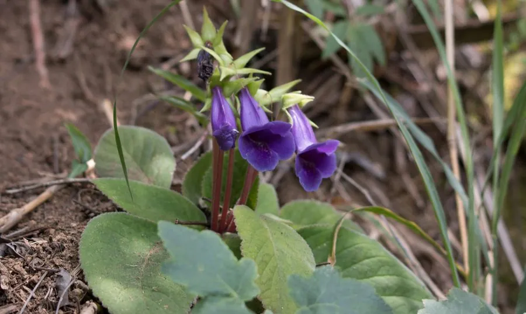

花卉与草本 · 植物界
大岩桐 Sinningia speciosa

苦苣苔科多年生球根草本，叶片绒质、花朵钟形如丝绒，色彩浓艳，是室内盆栽与花坛的常见花卉，原产巴西。
- 分类
- 门被子植物门纲木兰纲目唇形目科苦苣苔科属大岩桐属
- 栖息环境
- 巴西阴湿山区的林下与岩缝，喜温暖、湿润、散射光
- 地理分布
- 原产巴西，现世界各地广泛盆栽，中国各地花市常见
- 保护级别
- 暂无评估
物种志
大岩桐为苦苣苔科大岩桐属多年生球根草本，株高 15–30 厘米，地下具扁球形块茎。叶片大，卵形至长椭圆形，肉质，密被绒毛，深绿色。花单生或数朵聚生叶腋，花冠钟形，直径 5–8 厘米，有红、粉、紫、白及复色，花期 4–10 月；果实为蒴果。
大岩桐原产巴西的阴湿山区，喜温暖、湿润和明亮的散射光，忌强光暴晒和积水。它叶片绒质、花朵钟形如丝绒，色彩浓艳，是室内盆栽和花坛的常见花卉；块茎可反复开花，花后剪去残花、保留叶片养球，来年可再度萌发。浇水时应沿盆边浇，避免淋湿叶片和块茎；叶插和块茎分株均可繁殖。
形态与习性
- 株高15–30 厘米，具扁球形块茎
- 花期4–10 月
- 果期花后结蒴果
- 光照喜明亮散射光，忌强光暴晒
- 水分喜湿润，忌淋湿叶片
- 土壤疏松透气、富含腐殖质的基质
- 繁殖叶插、块茎分株
- 主要用途室内盆栽、花坛布置
趣味知识
- 大岩桐叶片密被绒毛，花朵像丝绒，触感十分特别。
- 它地下有扁球形块茎，可反复萌发开花。
- 浇水时淋湿叶片和块茎容易腐烂，应沿盆边浇。
- 大岩桐原产巴西阴湿山区，喜散射光而怕暴晒。